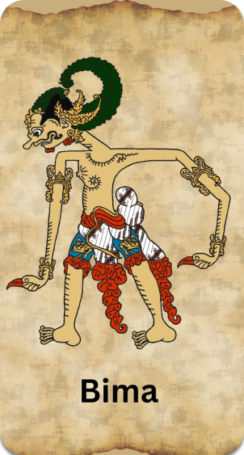

Werkudara iku putrane Prabu Pandhu Dewanata Ian Dewi Kunthi sing angka
kalih. Werkudara iku titisane Bathara Bayu. Awit putra angka loro, mula
Werkudara uga sinebut putra panenggaking Pandhawa. Sesebutan liyane
Bratasena, Bimasena, Haryasena, Bayusiwi, Jagal Abilawa, Kusumadilaga,
Jayalaga. Kastriyane ing Jodhipati utawa Tunggul Pamenang.
Garwane
telu aran Dewi Nagagini, Dewi Arimbi, Ian Dewi Urangayu. Karo Dewi Nagagini,
'peputra Raden Antareja. Karo Dewi Arimbi, peputra Raden Gathutkaca:
Karo Dewi Urangayu, peputra Raden Antasena.
Raden Werkudara duwe
pusaka aran Kuku Pancanaka, Gada Rujakpala, Ian Gada Lambita¬muka. Aji-ajine
Bandung Bandawasa, Ungkal bener, Blabag Pengantol-antol, Bayu Bajra.
Ing
perang Bratayuda Werkudara dadi agul-aguling Pandhawa. Werkudara kang bisa
mateni Dursasana, Sengkuni lan Duryudana. Sawise perang Bharatayuda,
Parikesit wis jumeneng nata, bebarengan marang sedulur Pandhawa wis jumeneng
nata, bebarengan marang sedulur Pandhawa liyane, ninggalake praja. Werkudara
tiwas sumusul Sadewa, Nakula, lan Harjuna. Werkudara tiwas angka papat
amarga nalika uripe seneng mangan, rada kasar, lan ora bisa basa.Wosing budi
pekerti:1. Duwea watak satriyatama: luhur ing budi, seneng tetulung, adil,
wani ing bebener, mbrastha angkara murka!2. Bektia marang wong tuwa,
luwih-luwih marang ibu!3. Dektia marang guru!4. Tresna asih marang
sedulur.5. Darbea jiwa satriya kang dadi bentenging negara!

About Us
Ini adalah website yang dibuat untuk semua orang yang ingin mempelajari atau
mengenal seputar wayang
Alamat
Pandawa 5
Jalan Laksda Adi Sucipto Gg. Stasiun 30 Kelurahan Purwodadi,Kecamatan
Blimbing Kota Malang, Indonesia 65125